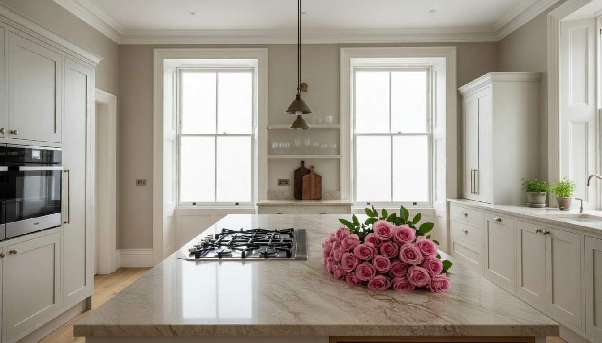

Projekt wnętrz
Koncepcja, układ funkcjonalny, materiały, oświetlenie oraz kompletna dokumentacja wykonawcza.

Cimer Studio
Kraków · Bielsko-Biała · Katowice · Tychy · Beskidy · Londyn
Butikowe studio projektujące wnętrza, kuchnie i zabudowy na wymiar z myśleniem o materiale, detalu, proporcji i wykonaniu.

Wnętrza prywatne · Stolarka · Detal
Światło, proporcje, stolarka, materiały i wykonanie muszą działać razem od pierwszej decyzji projektowej. To podejście wynika z pracy w warsztacie, projektowania mebli na wymiar i doświadczenia przy londyńskich realizacjach.
Wybrane realizacje
Kraków · kuchnia · salon · sypialnia · łazienka · zabudowy na wymiar
Rezydencja · salon · kuchnia · sypialnie · łazienki · pralnia · sauna

Dom górski · salon · kuchnia · antresola · sypialnia · łazienka

Dom rodzinny · kuchnia na wymiar · strefa dzienna · pralnia · łazienki

Drewno · skosy · kuchnia · łazienki · zabudowy na wymiar

Apartament · kuchnia · jadalnia · salon · sypialnia · detale
Designed and crafted in Poland
Cimer Studio wyrasta z rodzinnej tradycji meblarskiej Kalwarii Zebrzydowskiej i piętnastu lat pracy w Londynie — od warsztatu, przez meble na wymiar, po wnętrza prywatne premium.
Zakres współpracy
Koncepcja, układ funkcjonalny, materiały, oświetlenie oraz kompletna dokumentacja wykonawcza.
Realistyczne obrazy wnętrz i mebli pomagające świadomie ocenić proporcje, materiały i klimat projektu.
Koordynacja wykonawców, instalacji, stolarki, materiałów, odbiorów i jakości prac od etapu budowy po finalne wykończenie.
Kuchnie, garderoby, biblioteki, meble łazienkowe i indywidualne zabudowy projektowane jako część całego wnętrza.
Kraków · apartament prywatny
Elegancki apartament z klasycznym detalem, ciemnym drewnem i spokojną paletą materiałów.
Zakres: projekt wnętrz · kuchnia · salon · sypialnia · łazienka · zabudowy na wymiar · detal stolarski


Kraków · rezydencja prywatna
Elegancki dom oparty na klasycznych proporcjach, naturalnym drewnie, kamieniu i indywidualnie projektowanej stolarce.
Zakres: projekt wnętrz · salon · kuchnia · sypialnie · łazienki · pralnia · sauna · meble na wymiar


Polska · dom górski
Współczesny dom górski zaprojektowany wokół widoku, naturalnego drewna, światła i spokojnych materiałów.
Zakres: koncepcja wnętrza · salon · kuchnia · antresola · sypialnia · łazienka · zabudowy indywidualne


Polska · okolice Krakowa
Rodzinny dom oparty na świetle, ogrodzie i naturalnych materiałach.
Zakres: projekt wnętrz · kuchnia na wymiar · łazienki · pralnia · pokój dziecka · detale stolarskie


Sucha Beskidzka · Polska
Nowoczesny dom rodzinny z naturalnym drewnem, betonem i zabudowami pod skosami.
Zakres: projekt wnętrz · kuchnia · salon · łazienki · pokój dziecka · zabudowy pod skosami


Londyn · Wielka Brytania
Jasny apartament z klasycznym detalem, naturalnym drewnem i kompaktową kuchnią.
Zakres: projekt wnętrz · kuchnia · jadalnia · salon · sypialnia · detale


Manufaktura Cimer Studio
Wybrane projekty realizujemy również w naszej manufakturze. Dzięki temu możemy zachować kontrolę nad proporcją, materiałem, konstrukcją i jakością wykonania — od pierwszego szkicu po finalny montaż.
Kuchnie · garderoby · biblioteki · meble łazienkowe · stoły · krzesła · meble wolnostojące · indywidualne zabudowy



Ograniczona liczba realizacji
Pracujemy z niewielkim, doświadczonym zespołem i świadomie realizujemy ograniczoną liczbę projektów stolarskich w ciągu roku. Pozwala nam to zachować pełną kontrolę nad detalem, wykonaniem i przebiegiem całego procesu.
Jeżeli kalendarz manufaktury jest już zamknięty, nadal oferujemy kompleksowy projekt wnętrza wraz z pełną dokumentacją wykonawczą przygotowaną do realizacji przez wybranego wykonawcę.
Studio
Moje podejście do wnętrz zaczęło się w warsztacie. Od piętnastego roku życia pracowałem przy meblach, kontynuując rodzinne rzemiosło związane z Kalwarią Zebrzydowską.
Przez ostatnie piętnaście lat pracowałem w Londynie, głównie przy projektach w Chelsea i Fulham — od warsztatu, przez meble na wymiar, po wnętrza prywatne premium.
Dziś łączę te doświadczenia w Cimer Studio: projektuję spokojne, spójne wnętrza, w których estetyka, stolarka, materiał i wykonanie są częścią jednej koncepcji.
Kontakt
Napisz kilka informacji o inwestycji. Dzięki temu łatwiej ocenimy, czy możemy pomóc i jaki powinien być kolejny krok.